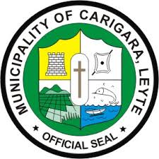
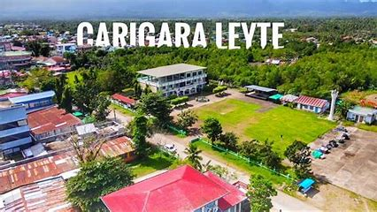
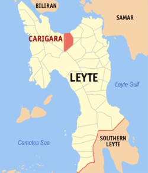

PROFILE
Carigara is a 2nd class municipality in the province of Leyte. It has 49 barangays, 5 of which are in the poblacion, (Baybay, Ponong, Sawang, San Mateo and Jugaban). Established in 1571, Carigara holds the distinction of being the inaugural town founded in the expansive Eastern Visayas region. The Poblacion is located 54 kilometers away from Tacloban City, the capital of Leyte and regional center of Region VIII or Eastern Visayas. It could be reached by sea and land transportation.
BRIEF HISTORY
According to local legend, the town got its name from the original settler, the founder of the town, Datu Gara. People referred to the place as Kan Gara, meaning “that of Gara” or simply “Gara’s”. The historian, Jaime de Veyra, in his book Tandaya or Candaya says, that Carigara is the Tandaya or Candaya mentioned in Loarca’s “Accounts of Encomiendas”; that the name may have been originally Kan Daya, Kan Darag, or Kan Gara; that Kan Dara became Kan Gara and for phonetic convenience finally became Kalgara from which the Spaniards derived its present name CARIGARA. This is partly affirmed in the ‘Relacion de Don Miguel de Loarca’ written in 1582 which lists Carigara as the biggest, most populous and most organized town in Leyte at that period.
Carigara became the Residencia Capital, the hub of all Jesuit activities for Eastern Visayas. As political stability became established, Carigara became not only the spiritual but also the political center and premier port of Samar and Leyte. It once became a capital of Leyte when Don Pedro de Antonio took over as Alcalde Mayor in November 20, 1823, but three years later, the next Alcalde advocated returning to Tacloban, the plea was finally granted on February 26, 1830.
Carigara became the Residencia Capital, the hub of all Jesuit activities for Eastern Visayas. As political stability became established, Carigara became not only the spiritual but also the political center and premier port of Samar and Leyte. It once became a capital of Leyte when Don Pedro de Antonio took over as Alcalde Mayor in November 20, 1823, but three years later, the next Alcalde advocated returning to Tacloban, the plea was finally granted on February 26, 1830.
SOURCE:wikipedia
ATTRACTIONS
Carigara may not be blessed with many beautiful scenic spots, but its history is colorful and worth showcasing. It became the set of evangelizations over 400 years ago and it once serve as capital of Leyte earlier in its history. It takes pride on its ruin, the fortress pre-Spanish white tower, the first Roman Catholic Church (Binongtoan Memorial) where Datu Gara Shrine was built beside the old stone Church ruins, Old Municipal Building that was built in the mid-19th century and once was the seat of the government of the different periods in the town’s history that now serves as the Municipal Library and Museum, Gawas an Harigi an architectural curiosity in itself because of the peculiar posts seen outside the building (literally Gawas an Harigi in local dialect) Heroes Shrine to commemorate the heroes and war veterans during the WWII. The Holy Cross Parish Church, a 144-year-old church built by Franciscans missionary to replace the old stone church that was severely damaged during the Muslim raiders. Here sits the patron of the town, the Holy Cross. The Plaza Triunfo, that was built. The Carigara Boulevard / Baywalk has its own beauty during sunset time. It became a hangout place for family and friends from dusk till evening.
Colourful festivities happen during the celebration of the Town Fiesta (in honor of the Triumph of the Holy Cross) which is celebrated every 16th of July – commemorates the date of the first coming of the Spaniards dated July 16, 1569, the Kalsada ni Gara and Subiran Regatta a traditional sailing event during fiesta. Magara Festival depicts elegance and abundance of the Kalgaran-ons in commemoration of its founder Datu Gara. Street dancing, colorful costumes, props and live music add to the meaningful celebration. The annual Grand Alumni Homecoming of HCCC has now become a tourist attraction, street party, colorful float parade depicting the theme for the year’s celebration.
PASALUBONG
Carigara is home to sumptuous delicacies such as pastillas made from pure carabao’s milk or cow’s milk, humba, hubhob - a local delight crafted from grated cassava, eggs, kalamay, milk, and sugar, cooked within a bagacay (bamboo pole) over charcoal, imparting a unique and flavorful taste to this traditional specialty. Carigara also offers baked delicacies like roscas, cookies (butter, cinnamon, cornstarch, coconut, and peanut). Biti is also one of the unique delicacies that the town offers. Kalamay (padak) is also one of the products of Carigara. The kalamay is cooked in the traditional way using a decade-old extracting machine with the help of a carabao, where juice is extracted from the sugarcane. Aside from these delicacies, Carigara is also known for its sundang (machete), which comes in different sizes and styles. The town is also well-known for its production of traditional hand-crafted machete or bolo- the sundang.